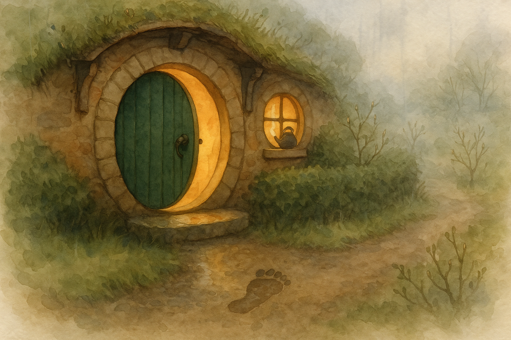

The Shire woke up damp today, the sort of morning that makes even the birds sound as if they are clearing their throats politely. When I opened the round door for a look (and, if I am honest, for the smell), there was a single fresh footprint in the mud by the step.
Now, a footprint is a very small thing — it is hardly a letter, and not at all a breakfast — but it can set a hobbit thinking. It reminded me how the Road never truly goes away in Middle Earth; it merely strolls past the Hill and waits to be noticed.
I put the kettle on and watched the steam curl up against the pane, and I thought of an old traveling lesson: "There is nothing like looking, if you want to find something." Perhaps that is the chief adventure of an ordinary day at Bag End — not running off (goodness no), but keeping one’s eyes open enough to see that the world is still making quiet marks at your doorstep.
Filed under: Middle Earth • Written at Bag End